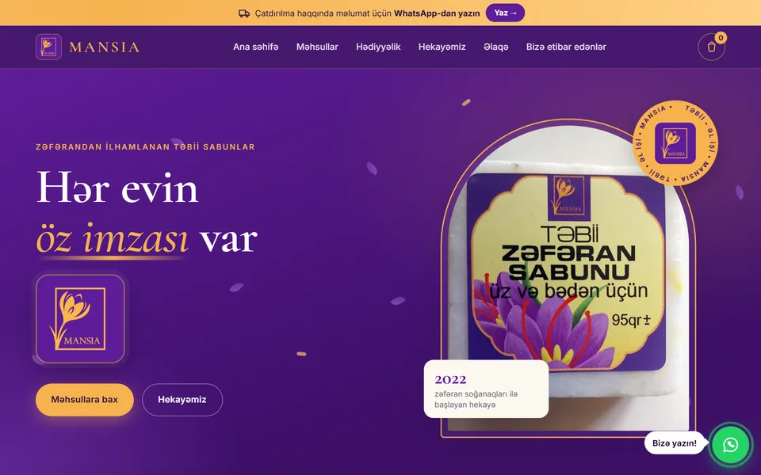
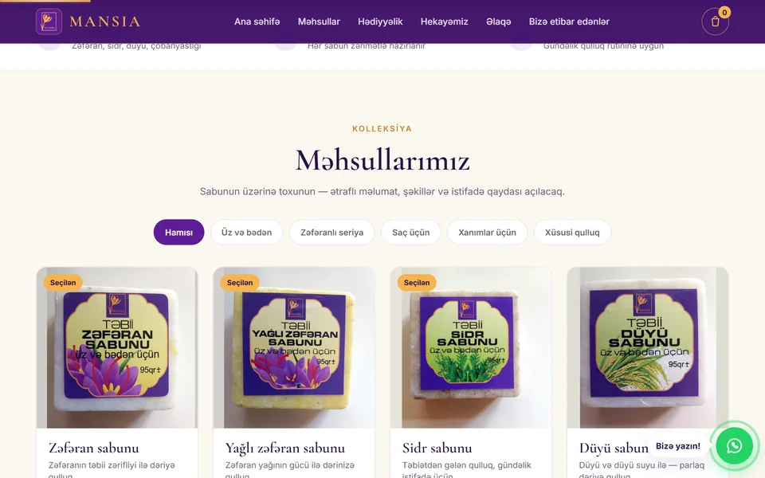
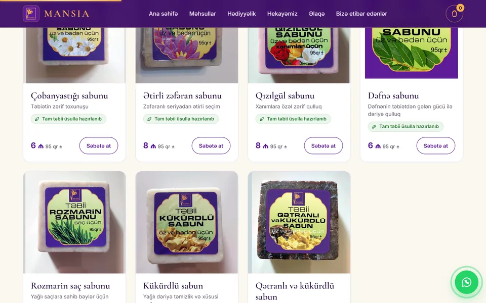
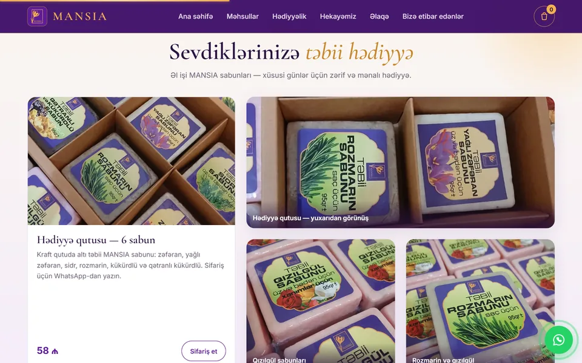

MANSIAMANSIAMANSIA
Zəfərandan ilhamlanan təbii, əl işi sabun brendi MANSIA üçün onlayn mağaza: kolleksiya, hədiyyə qutuları, brendin hekayəsi və WhatsApp ilə sifariş.
An online shop for MANSIA, a brand of natural handmade soaps inspired by saffron: the collection, gift boxes, the brand story and ordering through WhatsApp.
Интернет-магазин MANSIA, бренда натурального мыла ручной работы, вдохновлённого шафраном: коллекция, подарочные наборы, история бренда и заказ через WhatsApp.




MANSIA zəfərandan ilhamlanan təbii, əl işi sabunlar istehsal edən brenddir: zəfəran, yağlı zəfəran, sidr, düyü, çobanyastığı, qızılgül, dəfnə, rozmarin, kükürd və başqaları. Bu sayt brendin onlayn mağazası və vizit kartıdır.
Müştəri kolleksiyaya baxır, sabunu kateqoriyaya görə süzür, karta toxunanda ətraflı məlumat, şəkillər və istifadə qaydası açılır. Səbət seçimləri və cəmi məbləği göstərir, bir düymə ilə sifariş hazır mesaj kimi WhatsApp-a göndərilir. Ödəniş sifariş təsdiqləndikdən sonra kartla edilir.
Saytda hədiyyə qutuları, brendin 2022-ci ildə zəfəran soğanaqları ilə başlayan hekayəsi, "Necə sifariş edim?" bələdçisi və müştəri rəyləri bölməsi də var. Dizayn brendin bənövşəyi və qızılı rənglərində, zərif serif şriftlərlə hazırlanıb.
MANSIA is a brand of natural handmade soaps inspired by saffron: saffron, saffron oil, cedar, rice, chamomile, rose, bay leaf, rosemary, sulphur and more. This site is the brand's online shop and calling card.
Customers browse the collection, filter soaps by category, and tap a card to open details, photos and how to use it. The cart shows the selection and total, and one button sends the order to WhatsApp as a ready-made message. Payment is by card once the order is confirmed.
The site also has gift boxes, the brand story that began with saffron bulbs in 2022, a "How do I order?" guide and a reviews section. The design uses the brand's purple and gold with elegant serif type.
MANSIA — бренд натурального мыла ручной работы, вдохновлённого шафраном: шафран, шафрановое масло, кедр, рис, ромашка, роза, лавровый лист, розмарин, сера и другое. Этот сайт — интернет-магазин и визитная карточка бренда.
Покупатели смотрят коллекцию, фильтруют мыло по категориям и открывают карточку с подробностями, фото и способом применения. Корзина показывает выбор и сумму, а одна кнопка отправляет заказ в WhatsApp готовым сообщением. Оплата картой после подтверждения заказа.
На сайте также есть подарочные наборы, история бренда, начавшаяся с луковиц шафрана в 2022 году, инструкция «Как заказать?» и раздел отзывов. В дизайне — фирменные фиолетовый и золотой цвета и элегантный шрифт с засечками.
- Kolleksiya: 11 növ sabun, kateqoriya filtrləri, hər sabun üçün ətraflı pəncərə.
- Sifariş: səbət, cəmi məbləğ, bir düymə ilə WhatsApp sifarişi, kartla ödəniş.
- Hədiyyəlik: 6 sabunluq kraft hədiyyə qutusu və fotoqalereya.
- Brend hekayəsi: zəfəran tarlasından sabuna qədər yol, zaman xətti ilə.
- Collection: 11 kinds of soap, category filters and a detail window for each.
- Ordering: cart, running total, one-tap WhatsApp order, card payment.
- Gifts: a 6-soap kraft gift box and a photo gallery.
- Brand story: from the saffron field to the soap, told as a timeline.
- Коллекция: 11 видов мыла, фильтры по категориям и окно с подробностями для каждого.
- Заказ: корзина, итоговая сумма, заказ в WhatsApp одним нажатием, оплата картой.
- Подарки: крафтовая подарочная коробка на 6 мыл и фотогалерея.
- История бренда: путь от шафранового поля до мыла в виде таймлайна.